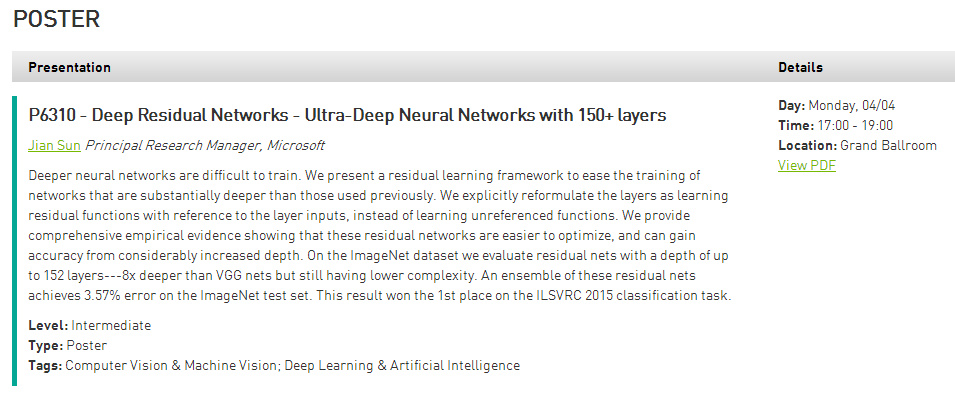

这年头进程间通讯主要靠TCP么？

斯图亚特9
2016-03-30
斯图亚特9
2016-03-30
@NVIDIA英伟达GPU计算:
#GTC 2016# China Talks - 去年12月，@微软亚洲研究院 在ImageNet图像识别挑战赛中创下新的记录，将前五类错误率从6.6%降低至3.57%，他们的系统是一个具有152个层的神经网络，他们是如何做到的？请关注微软首席研究员孙剑带来的《深层残差网络 - 包含150多层的超级深度神经网络》
时间：4月4日17:00 / 地点：圣何塞会展中心Grand Ballroom；
课程详情可在 网页链接用代码P6310查询；
网页链接用代码P6310查询；
4月2日前注册GTC通票，使用折扣码ECS20立减$300！
时间：4月4日17:00 / 地点：圣何塞会展中心Grand Ballroom；
课程详情可在
4月2日前注册GTC通票，使用折扣码ECS20立减$300！
- 